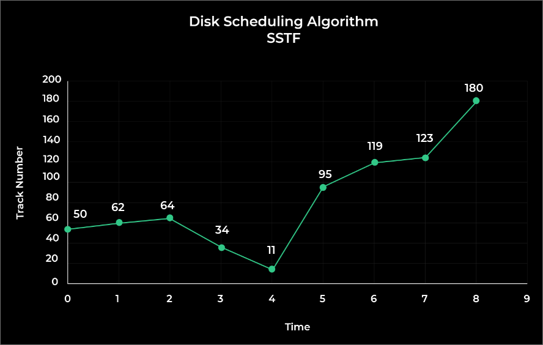

Shortest Seek Time First (SSTF) is a disk scheduling algorithm used in operating systems to efficiently manage disk I/O operations. The goal of SSTF is to minimize the total seek time required to service all the disk access requests.
In SSTF, the disk head moves to the request with the shortest seek time from its current position, services it, and then repeats this process until all requests have been serviced. The algorithm prioritizes disk access requests based on their proximity to the current position of the disk head, ensuring that the disk head moves the shortest possible distance to service each request.
Example:
Track Range from 0 to 199 and head initially is rested on 50
95, 180, 34, 119, 11, 123, 62, 64
(THM) = (50 – 0) + (180 – 0) = 230
Seek Time = THM * Seek rate = 230 * 5ms
Seek Time = 1150 ms

Advantages & Disadvantages :
1. The average time taken for response is reduced
2. Many processes can be processed
3. An increase in throughput
The following are the disadvantages of SSTF scheduling algorithm:
1. Starvation
2. Different time is taken for different responses
3. Overhead